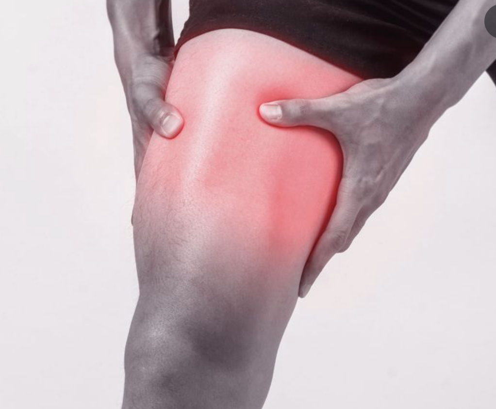
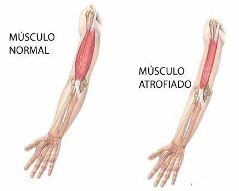
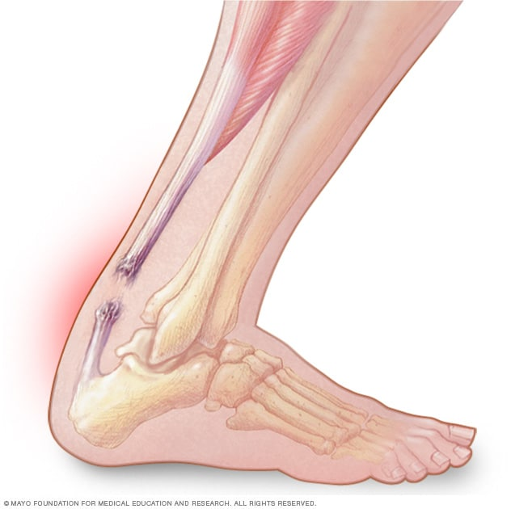
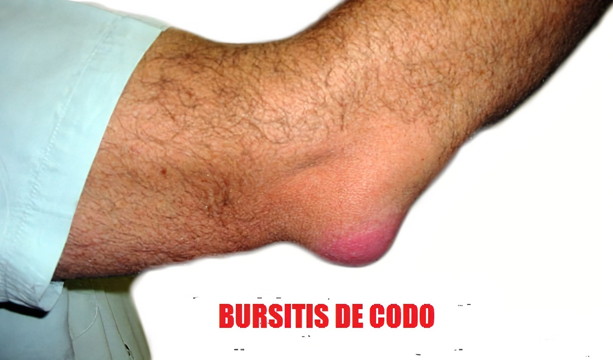

Enfermedades y lesiones musculares
Lesiones comunes
Distensiones o desgarros musculares
Ruptura parcial o total de fibras musculares por sobreesfuerzo.
Calambres
Contracciones involuntarias dolorosas, a menudo por deshidratación o fatiga.

Enfermedades genéticas
Distrofias musculares
Enfermedades genéticas que causan debilitamiento progresivo de los músculos (ej. Distrofia muscular de Duchenne).
- Debilidad progresiva
- Pérdida de masa muscular
- Dificultad en movimientos

Otras condiciones musculares
| Condición | Descripción | Tratamiento común |
|---|---|---|
| Miopatías inflamatorias | Enfermedades autoinmunes donde el cuerpo ataca los músculos | Medicamentos antiinflamatorios, terapia |
| Tendinitis | Inflamación de los tendones por uso excesivo | Reposo, hielo, antiinflamatorios |
| Rabdomiólisis | Daño muscular grave que libera mioglobina en la sangre | Hidratación intravenosa, monitoreo renal |
Lesiones específicas
Es la ruptura parcial o total del tendón que conecta los músculos de la pantorrilla (gastrocnemio y sóleo) con el hueso del talón (calcáneo). Esta lesión impide la función normal del pie, dificultando caminar, correr o ponerse de puntillas.

La bursitis es la inflamación de la bursa, estructura en forma de bolsa, que se sitúa entre huesos, tendones y músculos, con una función facilitadora del movimiento de dichas estructuras entre sí. Debido al proceso inflamatorio la bursa pasa a acumular una cantidad significativa de líquido. Esta dolencia puede ser aguda o crónica. Comúnmente, se presenta en la zona del hombro, la rodilla, el codo, la cadera o el tendón de Aquiles.
